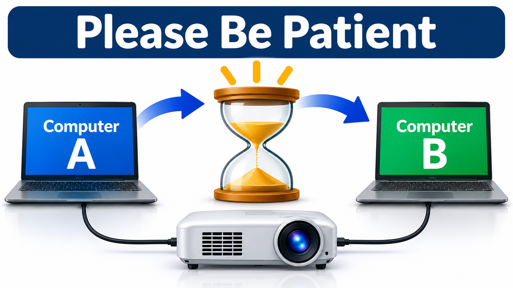

1. Beginning Use Examples
-
Everyday practical help
Examples
- What are the midterm election results for Nov 3, 2026 for a voter in Urbana IL 61802?
- Create a mediterranean dinner menu with recipes and ingredients. Favor short ingredient lists.
- Explain these medical test results [paste results text here]
-
Tech Help
Examples
- What is a podcast?
- How to set up a video call?
- Is this a scam [paste potential scam text here]?
- Where in Champaign/Urbana can I ship out used toner cartridge for recycling?
-
Personal connections
Examples
- How to set up recurring Zoom meeting with friends?
- Draft wedding toast [add details]
- Draft letter to reconnect with old friend [add details]
-
Reading recommendations
Examples
- Sci-Fi titles of books similar to those of Iain M. Banks
- New York Times and Atlantic articles on AI
- Create list of biographies of famous people
2. ClarkLinsey Use of LLM AIs
